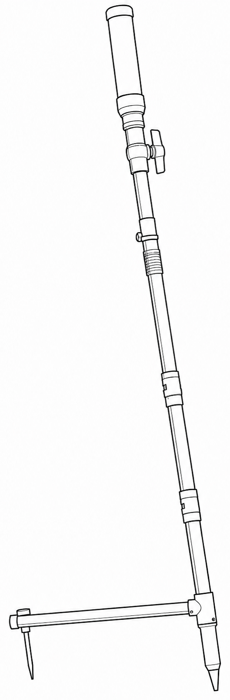
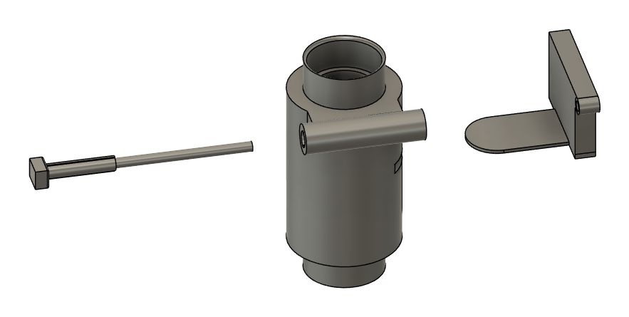
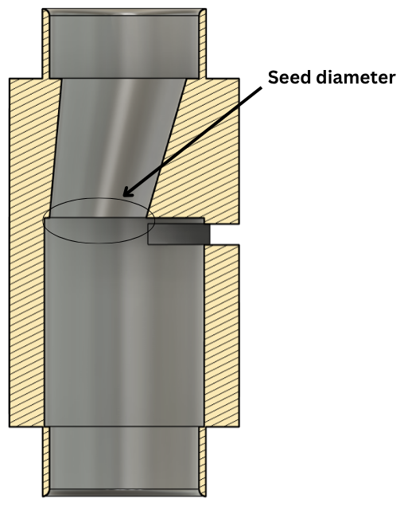
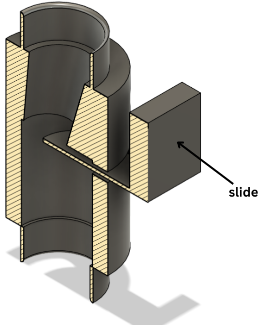
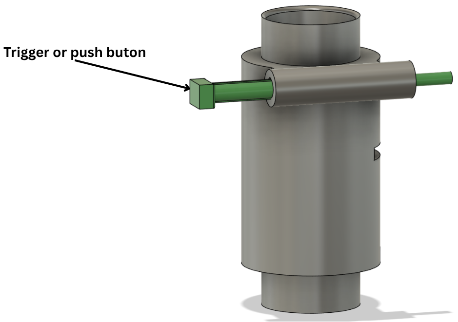

Plant Mate: Corn Planter for Farmers in Malawi

The problem
In a product development course, our team was asked to develop a device to help local farmers in Malawi plant corn. We followed the product development cycle, starting by understanding the problem through discussions with the farmers themselves, and ended with the design of Plant Mate.
My role
I designed the seed metering and trigger mechanism: the part that measures out the right amount of seed and releases it into the soil.
The metering mechanism
Seed falls from the tube into a channel that narrows to the diameter of a single seed, and a slide below it closes off the chamber. Pressing the trigger moves the slide and releases the measured seed into the soil.





What I took from it
The project showed me how much understanding user needs matters, and how to design functional mechanisms that address practical challenges.